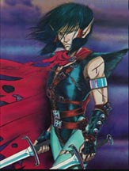

ROCKSEER

Пещерные Эльфы -- раса эльфов-отступников, которые живут под землей в каменных
пещерах. Также как и темные эльфы, они от природы умны, но пренебрегли
умственными науками и стали очень прозрачны. Как и эльфы, пещерные эльфы видят
в темноте, а также они безобидны и легко проходыт сквозь двери. Пещерные эльфы
должны оставаться нейтральными, чтобы использовать свои заклинаия. Поэтому
они уязвимы к воздействию всего, что сделано из дерева. Изначально они знают
заклинание: 'meld into stone'
Базовый экспириенс для Пещерных Эльфов:
Witch = 1500 Cleric = 1500 Thief = 1500 Warrior = 1500
Warlock = 1700 Ranger = 1700 Ninja = 1800